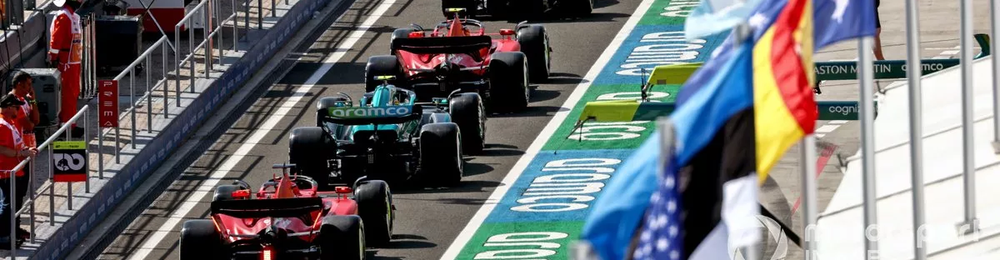
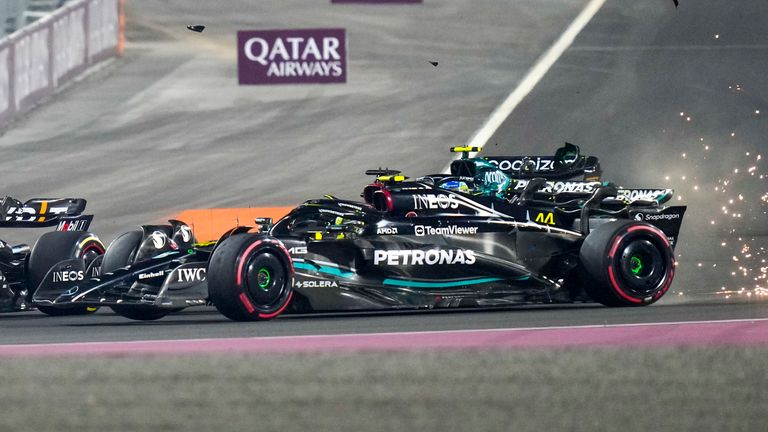
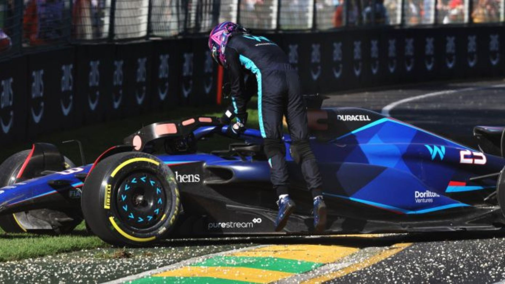
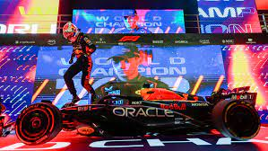

|

Formula One is the highest class of international racing for open-wheel single-seater formula racing cars sanctioned by the Fédération Internationale de l'Automobile. The FIA Formula One World Championship has been one of the premier forms of racing around the world since its inaugural season in 1950. |
|||
|
HAMILTON TOLOL Formula One is the highest class of international racing for open-wheel single-seater formula racing cars sanctioned by the Fédération Internationale de l'Automobile. The FIA Formula One World Championship has been one of the premier forms of racing around the world since its inaugural season in 1950. |
POOR ALBON Formula One is the highest class of international racing for open-wheel single-seater formula racing cars sanctioned by the Fédération Internationale de l'Automobile. The FIA Formula One World Championship has been one of the premier forms of racing around the world since its inaugural season in 1950. |
DUDU MAXVERSTAPEN Formula One is the highest class of international racing for open-wheel single-seater formula racing cars sanctioned by the Fédération Internationale de l'Automobile. The FIA Formula One World Championship has been one of the premier forms of racing around the world since its inaugural season in 1950. |
|
| p | |||